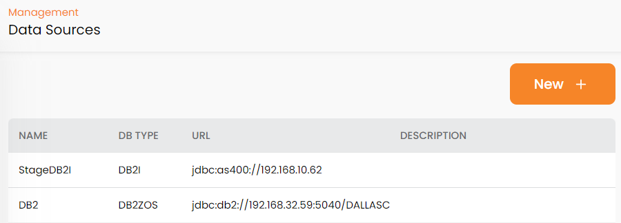
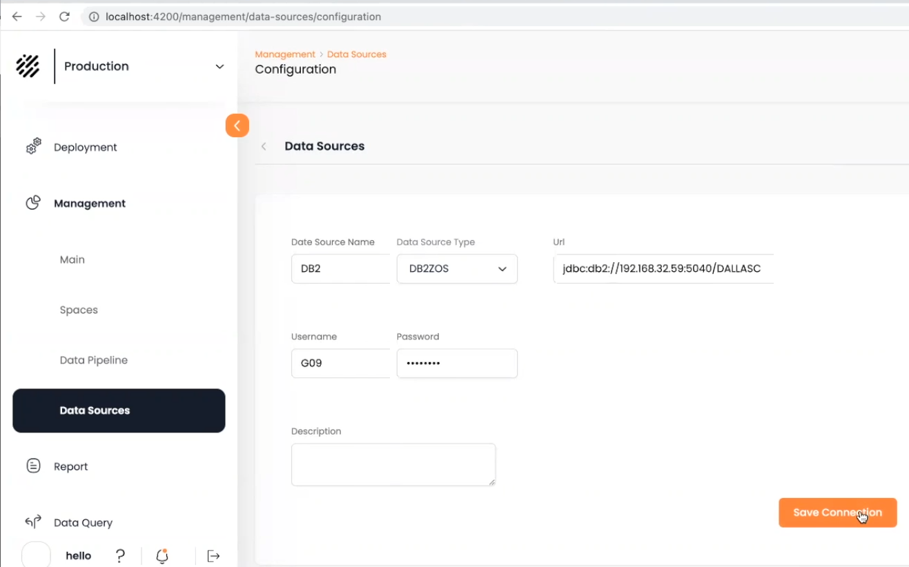

Data Sources define the origin of data in the System of Record. A data source is a reference to a particular database or data store.
When we define a
Press New + on the Data Sources screen:

The Configuration screen will display:

Name – the name you define to the data source
DB Type – the database type for the data source, as defined in the System of Record
URL – the URL for the data source
Username and Password – the credentials for accessing the data source
Description – a free-format description of the data source
Enter the configuration details and click Save Connection, The new data source will be included in the list in the Data Sources screen.
The Data Source screen shows a list of available data sources.
Name – the name you define to the data source
DB Type – the database type for the data source, as defined in the System of Record
URL – the URL for the data source
Description – a free-format description of the data source
After you create the data source, you can